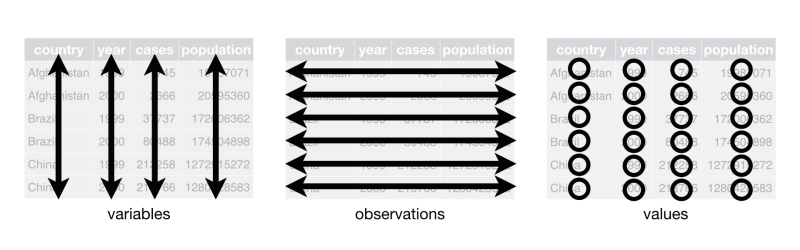
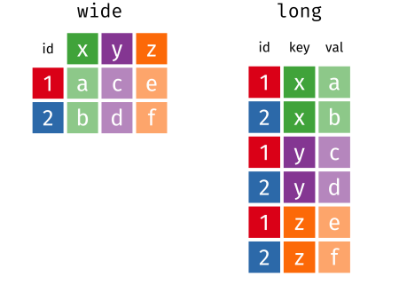

For this exercise, we’ll use functions from the {tidyr} and {dplyr} packages, so let’s load those as well as the {palmerpenguins} package for example data.
library(tidyr)
library(dplyr)
library(palmerpenguins)Tidy data refers to a specific format of data (not just being ‘clean’). Tidy data meets the following criteria:

Sometimes your data may already be ‘tidy’. But sometimes you may have to reshape your data to make it tidy.
Here are three datasets.
head(penguins1)head(penguins2)head(penguins3)There are numerous packages and functions that help you reshape data. Most of them are confusing, and it is difficult to remember the syntax. The {tidyr} package helps with this by offering two easy-to-remember functions that reshape data. Previously, they were termed gather() and spread(), so you may see these functions referenced. But these functions have been superseded by the more memorable functions pivot_longer() and pivot_wider() that reshape your data into long or wide format.

It might be useful to think about repeated-measures data to understand wide vs. long format. For instance, in the wide dataset above, there are four columns (id, x, y, z) and two rows. Let’s imagine that columns x, y, and z represent three time points that we’ve measured something, say cortisol level. We have two participants (1 and 2), and the values of their cortisol levels are a, c, e for participant 1 and b, d, f for participant 2. Thus, the repeated measures are oriented as different columns.
However, this same information can be stored in a different way. The long dataset shows that the repeated measures can be stored vertically as rows rather than horizontally as columns. Here, we have the id variable again to signal participant, but now we have a key column that signals which repeated measure the row contains. Then we have a column val that has all of the response values.
Same information. Two different ways to store it.
The pivot_longer() function takes wide data and makes it long. Therefore, it takes the column names for a set of columns and makes them a single column that acts as a ‘key’ for signalling the value column that is also generated. Here is the wide data:
wide <- tibble(id = 1:2, x = c("a", "b"), y = c("c", "d"), z = c("e", "f"))
wideTo make this longer, we need to take the column values for x, y, z and make a single column out of them. Then we need to match up the column names with the respective value. We can do this with the pivot_longer() function by specifying the columns that we want to pivot longer (it will just repeat the non-specified columns, e.g., id). Then we need to create new column names for both the key (using the names_to argument) and the values (using the values_to argument). For instance to make wide into long, we would use:
pivot_longer(wide, cols = x:z, names_to = "key", values_to = "val")Notice that the row order is slightly different from the previous version of long. If we want to produce long in the previous order, how do we sort data frames by row?
long <- wide %>%
pivot_longer(cols = x:z, names_to = "key", values_to = "val") %>%
arrange(key)
longLoad the {palmerpenguin} package and view the penguins dataset. Let’s recreate the penguins3 dataframe that we saw before. To do this, you need to (1) remove the flipper_length_mm, body_mass_g, and year columns and (2) create a new id column that is just a vector of row numbers (from 1 to the number of rows) in the dataframe. Then make that id column the first column of the dataframe. Note that you cannot remove and rearrange columns in the same select statement, so you’ll need two separate statements.
penguins3 <- select(penguins, ...) %>%
mutate(...) %>%
select(...)
penguins3Now that we have penguins3, we want to use pivot_longer() to produce penguins2. That is, we want to turn the bill columns vertically so that we have a column called measurement that takes the values bill_length_mm or bill_depth_mm and a column called size that includes the values. Use pivot_longer() to generate penguins2.
penguins2 <- pivot_longer(penguins3, ...)
penguins2The pivot_wider() function takes long data and makes it wide. So, it take a key column’s labels and makes columns out of them then fills in the appropriate values.
Here is the long data:
longTo make this wider, we need to take the column key and divide it up into columns x, y, and z. Then we need to distribute the values in val to the appropriate new columns. We can do this with the pivot_wider() function by specifying the column to get the names from (using the names_from argument) and the column to get the values from (using the values_from argument). For instance to make long into wide2, we would use:
wide2 <- pivot_wider(long, names_from = "key", values_from = "val")
wide2Does this match the original wide dataframe?
Let’s turn the penguins2 dataset back to penguins3 but rename it penguins3a. So we want to use the measurement column for new column names and size for values.
penguins3a <- pivot_wider(penguins2, ...)
penguins3aSometimes you want to separate values from a single column into multiple columns or combine multiple columns into a a single one to make a tidy dataframe.
If there are multiple values inside a single cell, you may want to separate() them. An important concept for this is the notion of a separator, which is the character(s) used to separate independent elements. For instance, if you wanted to separate an ISO 8601 date into the year, month, and day, the separator would be a dash -. But in this date style 05/17/2021, the separator is a slash /. Other times, there may not be a specific character that separates the elements, but position in a string may determine the elements.
The separate() function looks for standard delimiters as separators and if there is only one type will separate based on that. Separate the date column into three new columns called year, month, and day.
separate(my_dates, ...)If you need to combine multiple columns into a single one, use unite(). The default separator is an underscore _, so if you want something different, you need to specify it with the sep argument.
Let’s take our dataframe with the date separated out and combine it to reproduce my_dates. Make sure you run your code to check it before submitting.
unite(my_dates2, ...)Sweet! You can tidy up that data like a pro.